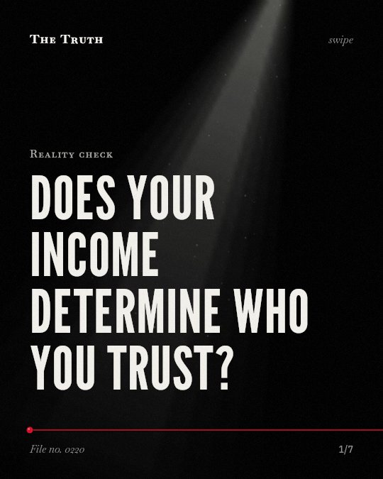

Reality check
Does your income determine who you trust?

Social class is the primary predictor of your trust in others.
While income inequality is often blamed for low trust, a large-scale analysis shows that social class itself has a systematic positive effect on trust.
Supported. At least one solid peer-reviewed study. The evidence goes against the popular idea.
What the research found
The effects of income inequality on social and institutional trust were systematically nonsignificant and smaller than the smallest negative effect of interest.
“Second, the effects of income inequality on social and institutional trust were systematically nonsignificant and smaller than the smallest negative effect of interest.”
Study, 2021. Kim et al., Social Psychological and Personality Science.
The effects of social class on social trust were systematically positive.
“First, the effects of social class on social trust were systematically positive, whereas the effects on institutional trust depended on the way social class was measured.”
Study, 2021. Kim et al., Social Psychological and Personality Science.
The negative link between income inequality and the happiness of lower-income respondents was explained not by lower household income, but by perceived unfairness and lack of trust.
“Most important, we found that the negative link between income inequality and the happiness of lower-income respondents was explained not by lower household income, but by perceived unfairness and lack of trust.”
Observational study, 2011. Oishi et al., Psychological Science.
Americans trusted other people less in years with more national income inequality than in years with less national income inequality.
“Americans trusted other people less and perceived other people to be less fair in the years with more national income inequality than in the years with less national income inequality.”
Observational study, 2011. Oishi et al., Psychological Science.
Lack of trust is more common in more unequal societies.
“Recent evidence suggests that many other social problems, including mental illness, violence, imprisonment, lack of trust, teenage births, obesity, drug abuse, and poor educational performance of schoolchildren, are also more common in more unequal societies.”
Review, 2009. Wilkinson & Pickett, Annual Review of Sociology.
The evidence on income and trust is contested.
Some studies link national income inequality to lower trust in others. However, other research finds the effects of income inequality to be nonsignificant. These findings are limited by how social class is measured.
Your position in the social hierarchy defines your outlook.
That may be why your level of trust in your neighbors depends less on the wealth gap around you and more on your own social standing.
This part is our reading of the evidence, not a finding.
You watch a neighbor through a cracked window.
You wonder if they are looking back. You weigh whether they are a friend or a stranger based on where you both live and what you do for work.
The honest summary
The evidence is contradictory, as one study finds income inequality linked to lower trust while a larger study finds the effect of income inequality on trust to be nonsignificant.
The findings are limited by inconsistencies in how social class is measured and the small number of higher-level units available in some research.
Who do you trust in your own neighborhood?
Sources
- Shigehiro Oishi, Selin Kesebir, Ed Diener (2011). Income Inequality and Happiness. Psychological Science. Observational study, cited 874 times.
- Richard G. Wilkinson, Kate E. Pickett (2009). Income Inequality and Social Dysfunction. Annual Review of Sociology. Review, cited 855 times.
- Youngju Kim, Nicolas Sommet, Jinkyung Na et al. (2021). Social Class—Not Income Inequality—Predicts Social and Institutional Trust. Social Psychological and Personality Science. Study, cited 71 times.
Also read for this file, not quoted
- Patel et al. (2018). Income inequality and depression: a systematic review and meta‐analysis of the association and a scoping review of mechanisms.
- Lynch et al. (2004). Is Income Inequality a Determinant of Population Health? Part 1. A Systematic Review.
- Tibber et al. (2021). The association between income inequality and adult mental health at the subnational level—a systematic review.
This file was researched and drafted by software, then checked by rules a model cannot talk its way around: each quote above was matched word for word against the paper, and every number had to appear in it. How files are made.